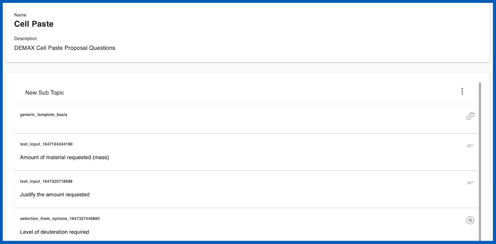
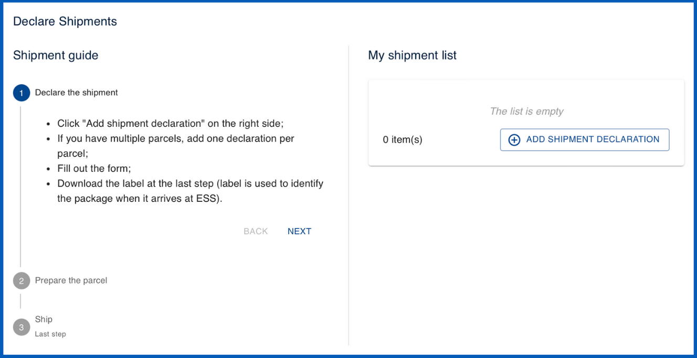
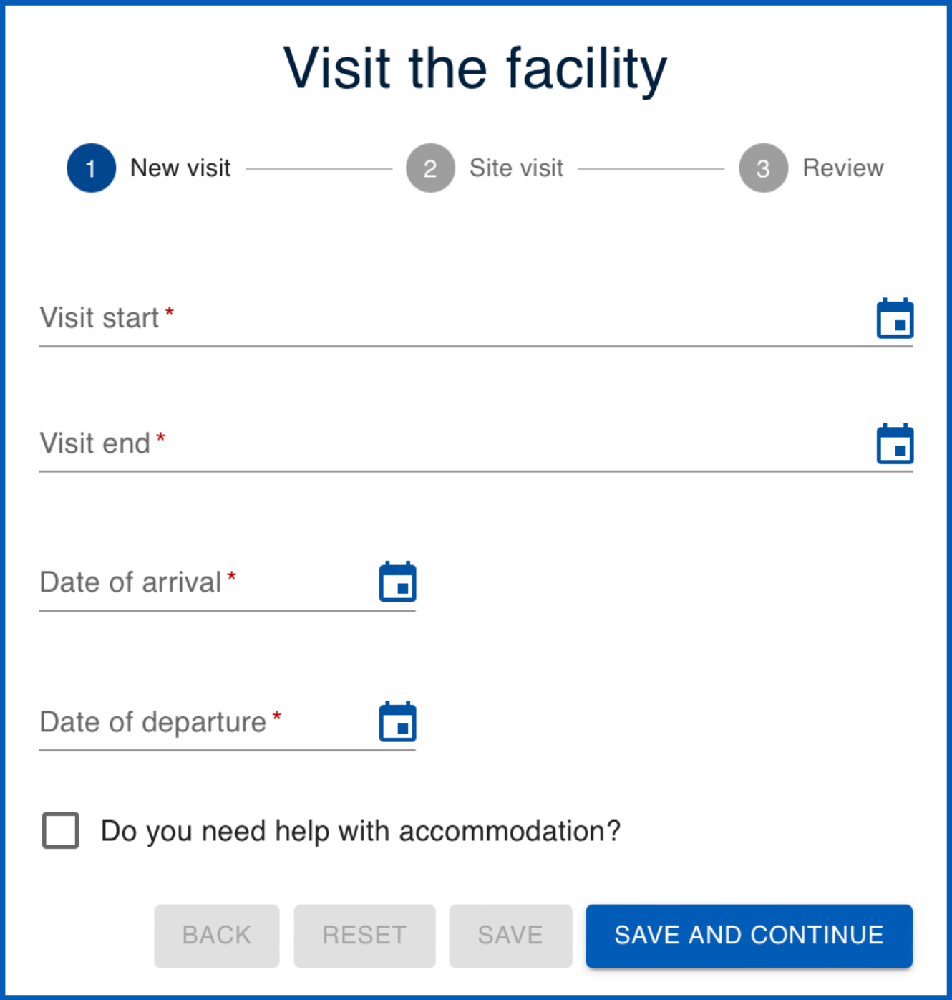

Creating templates

What are templates?
Templates are used to save and re-utilize predefined information across User Office. Calls are built using several different types of templates which can be edited and cloned. Templates carry information and serve many functions; for example, they may contain specific questions to be used within the call which users answer in their proposals. The template system is useful because it saves you having to do all the work from scratch every time. Furthermore, it allows for standardization which is essential for data collection and analysis.
There are several different types of templates utilized within Calls:
Types of templates
FAP review templates
FAP review templates are designed to capture all necessary information that reviewers need to provide when submitting their FAP reviews. These templates generally include questions regarding scientific evaluation of the associated proposal. Users fill in their answers to these questions in the predefined fields and submit their reviews.
User Officers can also utilize questions and sub-templates to customize review templates to include specific questions based on the nature and requirements of the research.

PDF templates
PDF templates enable users and User Officers to download proposals in a well-formatted and standardized PDF document for summary and sharing. User Officers can customize PDF templates by adjusting code to modify elements such as font size, colour and other formatting options.

Proposal templates
Proposal templates are designed to capture all necessary information that users need to provide when submitting their proposals. These templates generally include questions regarding experiment details, objectives, safety considerations and required resources. Users fill in their answers to these questions in the predefined fields and submit their proposals for review.
User Officers can also utilize questions and sub-templates to customize proposal templates to include specific questions based on the nature and requirements of the research.

Sample declaration templates
Sample declaration templates are designed to collect detailed information about the samples that researchers intend to use in their experiments. The purpose of these templates is to standardize the way sample-related data is gathered, ensuring that all necessary details are captured uniformly across different proposals. These templates are linked to proposal templates through sample declaration questions .

Sub templates
Sub templates are used to streamline and organize the creation of complex proposal templates.. They serve as reusable building blocks containing questions, enabling User Officers to efficiently manage and deploy recurring sets of questions across multiple proposals.
Sub templates are created by grouping related question templates into a cohesive unit and saving them as a standalone entity. When constructing or modifying a proposal template, User Officers can easily select and insert these sub templates into the appropriate sections, ensuring consistency and reducing the time required to build detailed proposal forms.

Shipment declaration templates
Shipment declaration templates are standardized forms used to collect and organize information about parcels being sent to a facility. These templates can be customized to guide users through the process of declaring each shipment, generating labels for package identification, and ensuring compliance with shipping protocols. Each parcel's details, including tracking information and handling instructions, are documented to facilitate smooth and traceable delivery to the facility.
NOTE: The shipment declaration form will only become accessible for users to fill out after their proposal status had been set to 'accepted' and the experiment has been allocated a time within the scheduler.

Visit registration templates
Visit registration templates are predefined forms used to gather and organize information from visitors planning to access a research facility. These templates collect essential details regarding visitor accomodation needs, arrival and departure dates, and on-site access, ensuring that the visit is properly coordinated and compliant with facility protocols.
NOTE: The visit registration form will only become accessible for users to fill out after their proposal status had been set to 'accepted' and the experiment has been allocated a time within the scheduler.

Proposal ESI templates
Proposal Experiment Safety Input (ESI) are designed to collect and document safety-related information for research proposals, ensuring that all necessary safety considerations are addressed before the experiment begins. User Officers can use ESI templates to gather details about potential hazards, risk assessments, safety measures, and compliance with regulatory standards. This structured approach helps in maintaining a safe research environment and ensures that all safety protocols are thoroughly evaluated and documented. User Officers can also utilize questions and sub-templates to customize Proposal ESI templates. This form is available after the users experiment has been accepted and scheduled so that users may review and confirm the safety information in case of any changes made to the experiment.
NOTE:The Proposal ESI form will only become accessible for users to fill out after their proposal status had been set to 'accepted' and the experiment has been allocated a time within the scheduler.

Sample ESI templates
Sample Experiment Safety Input (ESI) templates are predefined forms used to collect safety-related information about the samples involved in an experiment. These templates are added to proposal templates through sample declaration question templates, ensuring that all safety considerations, such as potential hazards or special handling requirements, are thoroughly documented and assessed as part of the proposal submission process.

Feedback templates
Feedback templates are structured questionnaires used to collect feedback from users about their experiments and overall experience at the facility. These templates allow users to provide insights and evaluations, which help the facility improve its services and address any issues.
NOTE: The feedback form will only become accessible for users to fill out after their proposal status had been set to 'accepted' and the experiment has been allocated a time within the scheduler.

The template creation process is similar for all types of templates except for PDF templates which are built with customizable code. All other templates are built with questions.
Step 1: Adding topics
- In the main menu select Templates
- From the dropdown menu, choose the type of template you wish to create
- From the template page, use the
Createbutton. -
Enter a name and optional description for your new template.
-
This will bring you to the template editor. From here you may add topics which act as the different sections within the questionnaire that users fill out.
It is good practice to utilize topics to split up the presentation of information for users. For example, in a proposal template you may wish to have a topic for addressing general information, another for support requirements and another for experiment details, etc.
- You can add questions to topics by clicking on options and from the dropdown select
Add topic. Topics can be reordered by clicking on theReorder topics modeoption. In reorder topics mode, you may drag and drop the topics into the desired order.
Step 2: Adding questions
- To add questions click on options and from the dropdown select
Add question. - This will open the question drawer which contains all previously used questions. You can
Searchfor pre-existing questions through question text or by question type. You may preview questions in the question drawer by clicking on them.
NOTE: Not all question types are compatible with every template. For example, sub-template questions can only be added to proposal templates.
Options when adding questions to a template
1. Use a pre-existing question
- To add a pre-exisiting question to the template simply find it in the question drawer and drag and drop it into the template.
2. Edit a pre-existing question
- First add a pre-exisiting question to the template. You can them modify it by clicking on it within the template.
NOTE: The changes you make to questions will only be updated within the current template you are creating. If you wish to make changes to the question across all templates click on the
edit(question key) link at the top of the question.
Once you are satisfied with your changes, click the Update button to save the changes to the question within the current template.
3. Creating a question
You may also create questions from scratch by clicking on options within the question drawer and selecting the question type you wish to create. The following is information for creating each of the question types:
Boolean

Boolean: A checkbox question type which can have one of the two possible values; true or false ('Yes' or 'No')
-
Key: The question key
-
Question: Fill in your question (It should be clear a 'yes' or 'no' answer applicable to the checkbox)
Contraints:
- User must check it to continue: enabling this constraint means that the user must check the box in order to continue filling out (and submit) their proposal. This is useful to use in questions that must be agreed to such as 'I acknowledge this is an Expression of Interest' or 'I agree to the terms and conditions'.
Date

Date: Allows users to specify a date which can be selected from a calendar tool
-
Key: The question key
-
Question: Fill in your question (it should relate to a date; e.g., please specify a delivery date)
-
Include time: This refers to including a specific time (in hours, minutes) for the date
-
Tooltip: This is text that appears to help the user. In this case it appears below the field where users specify the date.
Constraints:
-
Is required: enabling this constraint means that the user must select a date range in order to continue filling out (and submit) their proposal.
-
Min/Max: This allows you to define a valid date range. Min refers to the earliest date and max refers to the latest date which can be chosen. Note: leaving these field empty allows the user to chose any date
-
Default: Default is the date the calendar will be set to by default when the user goes to select the date.
Dependencies:
- This allows you to add dependencies to configure the conditions which need to be met for this question to be displayed to users. Leaving the dependencies empty will display the question to users irrespective of their responses.
Embellishment

Embellishment: A the text file which can be customized to modify elements such as font size, colour and formatting options facilitating the display of more detailed information for users. Note: this is not a question that users can provide responses to.
-
Key: The question key
-
Plain description: A plain description of the information being requested to be used for reference
-
Omit from PDF: Selecting this option will omit this section from the downloadable proposal pdf
Dependencies:
- This allows you to add dependencies to configure the conditions which need to be met for this question to be displayed to users. Leaving the dependencies empty will display the question to users irrespective of their responses.
File Upload

File Upload A question which allows users to upload attachments
-
Key: The question key
-
Question: Fill in your question (it should relate to attachmets; e.g., please upload figures for reference)
Options
- Helper text: Allows you to add more information for users which may be helpful with regard to the file upload (e.g., only PDF accepted)
Constraints:
-
Is required enabling this constraint means that the user must upload files to continue filling out (and submit) their proposal.
-
Omit from PDF: Selecting this option will omit this section from the downloadable proposal pdf
-
Accepted file types Select the accepted file types for users to upload
-
Max number of files Select the maximum number of files permitted for users to upload
Dependencies:
- This allows you to add dependencies to configure the conditions which need to be met for this question to be displayed to users. Leaving the dependencies empty will display the question to users irrespective of their responses.
Sub Template

Sub Template Sub templates are allow for related questions to be grouped into a cohesive unit and saved them as a standalone entity.
-
Key: The question key
-
Question: Add a question or title text
Options:
-
Template name:
-
Add button label: Customize the text on the add button
-
Can copy:
Constraints:
- Min/max entries
Dependencies:
- This allows you to add dependencies to configure the conditions which need to be met for this question to be displayed to users. Leaving the dependencies empty will display the question to users irrespective of their responses.
Interval

Interval
-
Key: The question key
-
Question: Fill in a question or title text (e.g., temperature)
-
Small label: Add a small subheading under the question text (e.g., enter the temperature)
Constraints:
-
Is required: enabling this constraint means that the user must provide an interval in order to continue filling out (and submit) their proposal.
-
Units: specifies the interval units
Dependencies:
- This allows you to add dependencies to configure the conditions which need to be met for this question to be displayed to users. Leaving the dependencies empty will display the question to users irrespective of their responses.
Multiple choice
Multiple choice a multiple choice selection question.
-
Key: The question key
-
Question: Fill in your question (e.g., which is the main sub discipline of engineering?)
Constraints
- Is required: enabling this constraint means that the user must select an option in order to continue filling out (and submit) their proposal.
Options
- Variant: allows you to specify the multiple choice format. The radio option provides the choices in a list in which only one can be chosen. The dropdown option provides a dropdown menu of the choices where multiple options can be chosen if the is multiple select box is enabled.
Items
- This section allows you to customize the answer choices. The order can be changed with the Up and Down arrows.
Dependencies:
- This allows you to add dependencies to configure the conditions which need to be met for this question to be displayed to users. Leaving the dependencies empty will display the question to users irrespective of their responses.
Dynamic multiple choice

Dynamic Multiple Choice:
-
Key: The question key
-
Question: Fill in your question
Constraints:
- Is required: enabling this constraint means that the user must select an option in order to continue filling out (and submit) their proposal.
Options
- Variant: allows you to specify the multiple choice format. The radio option provides the choices in a list in which only one can be chosen. The dropdown option provides a dropdown menu of the choices where multiple options can be chosen if the is multiple select box is enabled.
Dynamic URL
-
Link: Provide the URL
-
JsonPath: Provide the JsonPath
API request headers
- Add API request headers
Dependencies:
- This allows you to add dependencies to configure the conditions which need to be met for this question to be displayed to users. Leaving the dependencies empty will display the question to users irrespective of their responses.
Number

Number:
- Key: The question key
- Question:
Constraints:
- Is required: enabling this constraint means that answer the question in order to continue filling out (and submit) their proposal.
Dependencies:
- This allows you to add dependencies to configure the conditions which need to be met for this question to be displayed to users. Leaving the dependencies empty will display the question to users irrespective of their responses.
Rich text input

Rich Text Input
-
Key: The question key
-
Question:
Constraints:
Dependencies:
- This allows you to add dependencies to configure the conditions which need to be met for this question to be displayed to users. Leaving the dependencies empty will display the question to users irrespective of their responses.
Sample declaration

Sample Declaration
Note: Sample declarations will not function correctly if linked within the first topic.
-
Sample declaration template
-
Sample ESI template
-
Key: The question key
-
Question:
Constraints:
Dependencies:
- This allows you to add dependencies to configure the conditions which need to be met for this question to be displayed to users. Leaving the dependencies empty will display the question to users irrespective of their responses.
Text input
Text input
-
Key: The question key
-
Question:
Constraints:
Dependencies:
- This allows you to add dependencies to configure the conditions which need to be met for this question to be displayed to users. Leaving the dependencies empty will display the question to users irrespective of their responses.
Instrument Picker

Instrument Picker
- Key: The question key
- Question: Constraints:
Dependencies:
- This allows you to add dependencies to configure the conditions which need to be met for this question to be displayed to users. Leaving the dependencies empty will display the question to users irrespective of their responses.
NOTE: The basis question type is unique to each template type. It is mandatory and cannot be removed since it contains important information which needs to be addressed within each template. For example, in proposal templates it includes the section to add a Principle Investigator and co-proposers to the proposal. Having other questions prior to the basis question may create problems for users filling out the questionnaire.
Step 3: Configuring questions
Dependencies
- This allows you to add dependencies to configure the conditions which need to be met for this question to be displayed to users. Leaving the dependencies empty will display the question to users irrespective of their responses.
How do I use templates within a call?
- See the creating a call guide.